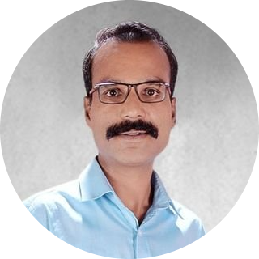

Kamlesh Loat
40, Male, Indian
I am a
Web Developer
.
Computer Courses
The Complete 2021 Web Development Bootcamp | Udemy.com
PG Diploma in Advanced Network Security | Pune University
Advance Diploma in Computer Hardware & Networking | Jetking, Pimpri
MCSE (Microsoft Certified System Engineer) | Rooman Technologies, Pune
Certifications
MCP (Microsoft Certified Professional) - Windows XP
Windows Server 2012 (70-410)
Redhat Certified Engineer (RHCSA 7.0)
Technical Skills
Administration Knowledge
Managing Network
Remote Desktop Support
Virtualization
Software Knowledge
Installation of Desktop OS - Windows 7/8/10, Fedora, Ubuntu
Installtion of Application - ERP, DTP, Engineering Design and others
Work Experience
Kinetic Motor Company Ltd.
as Computer Operator (May 2001 to Nov 2001)
Acute Computers
as Computer Hardware Engineer (Dec 2001 to Mar 2003)
Venkateshwara Enterprise
as Desktop support Engineer (April 2003 to Mar 2013)
Indira College of Engineering and Management
as System Engineer (IT Support) (April 2013 to May 2016)
T & T Infrastructures Pvt Ltd.
System Engineers (July 2016 to Feb 2018)
United Enterprises
as System Administrator (May 2018 to Jan 2020)
*Icon Infoline Pvt. Ltd.
as System Administrator (Feb 2020 to May 2021)
Education
EXAM
BOARD/UNIVERSITY
YEAR
MARKS IN %
S.S.C
Maharashtra Board
March 1996
66.53
H.S.C.
Maharashtra Board
March 1998
45.22
B.A.
Pune University
May 2010
49.38
Other Information
I am convesant with
English, Hindi
and
Marathi
.
My Hobbies
Contact Me.